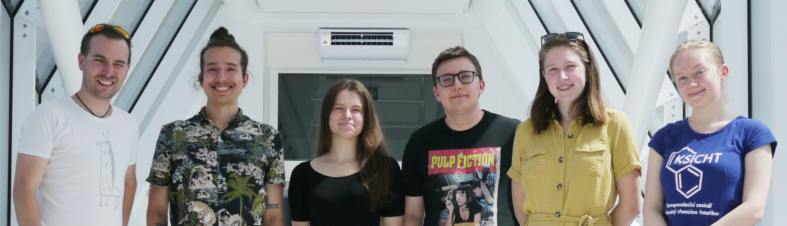
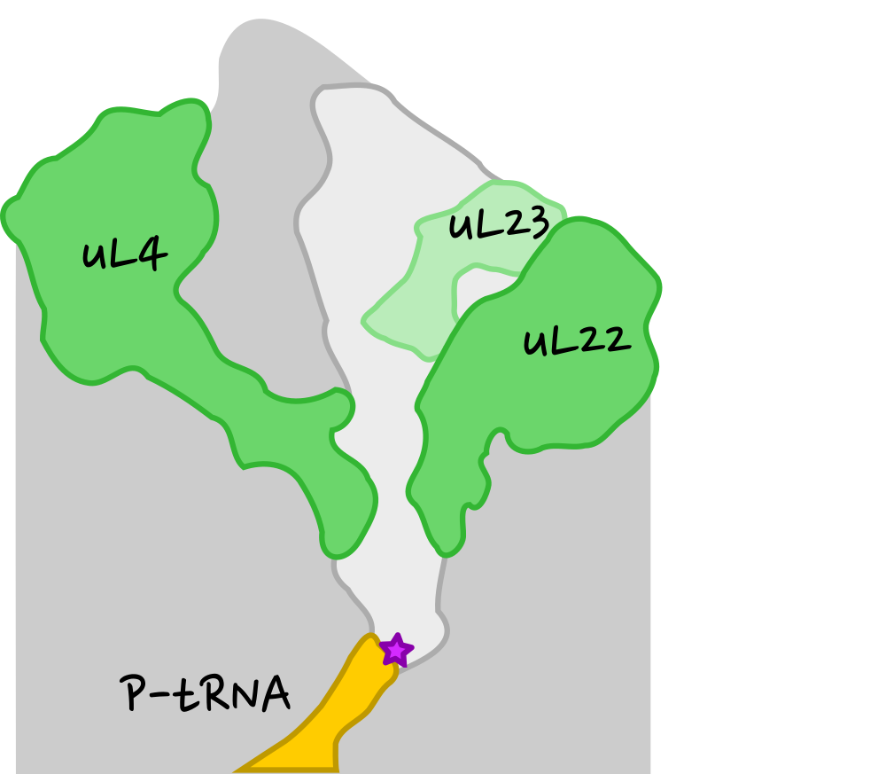
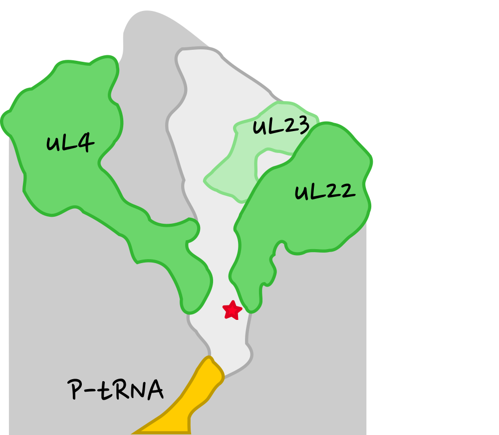
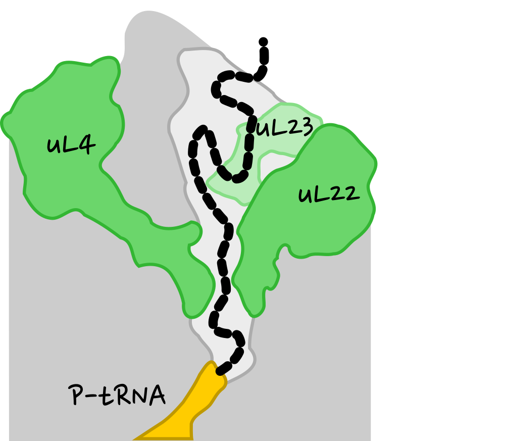
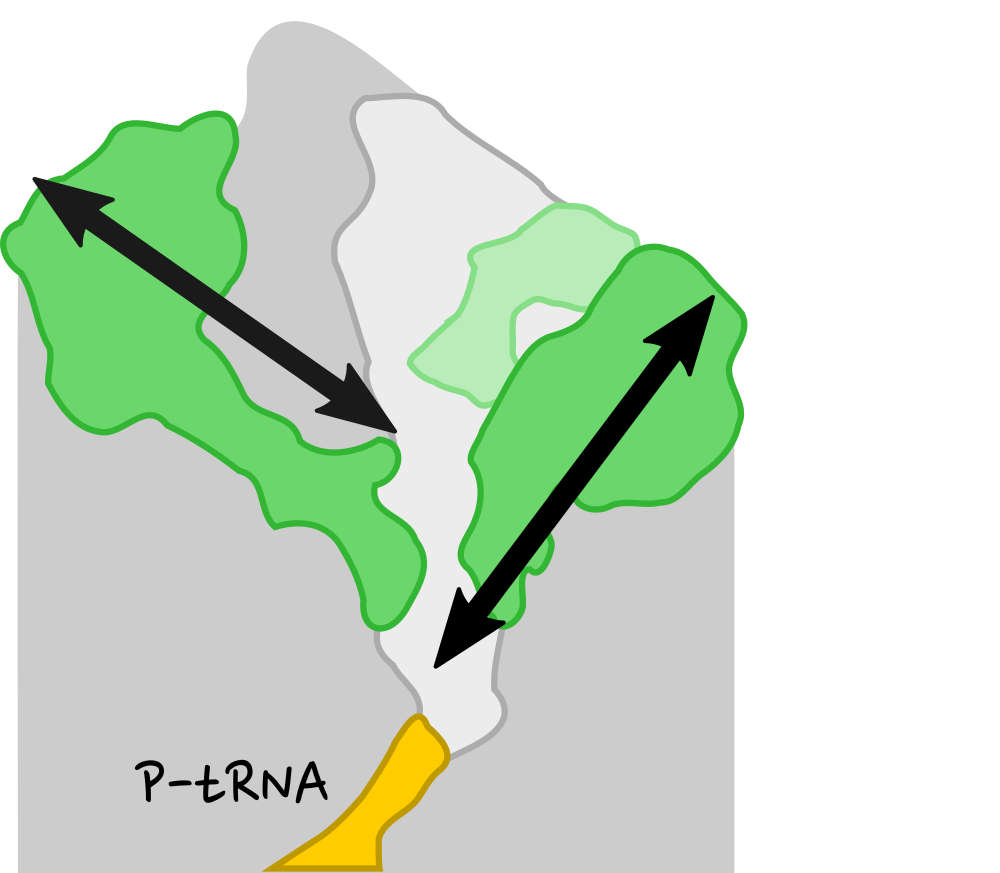
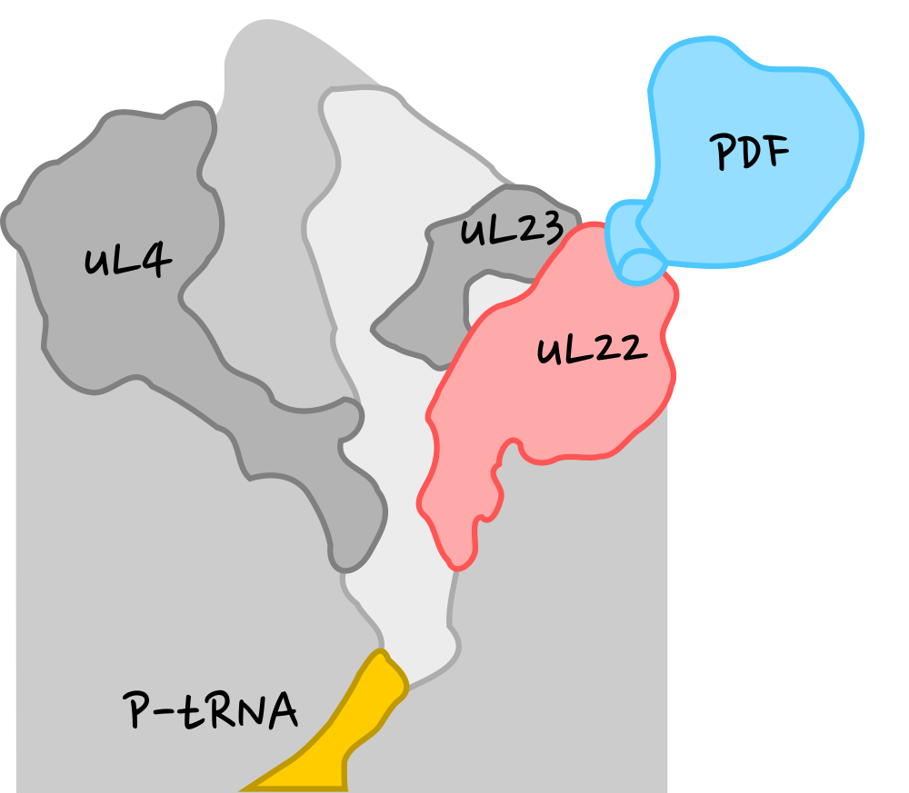
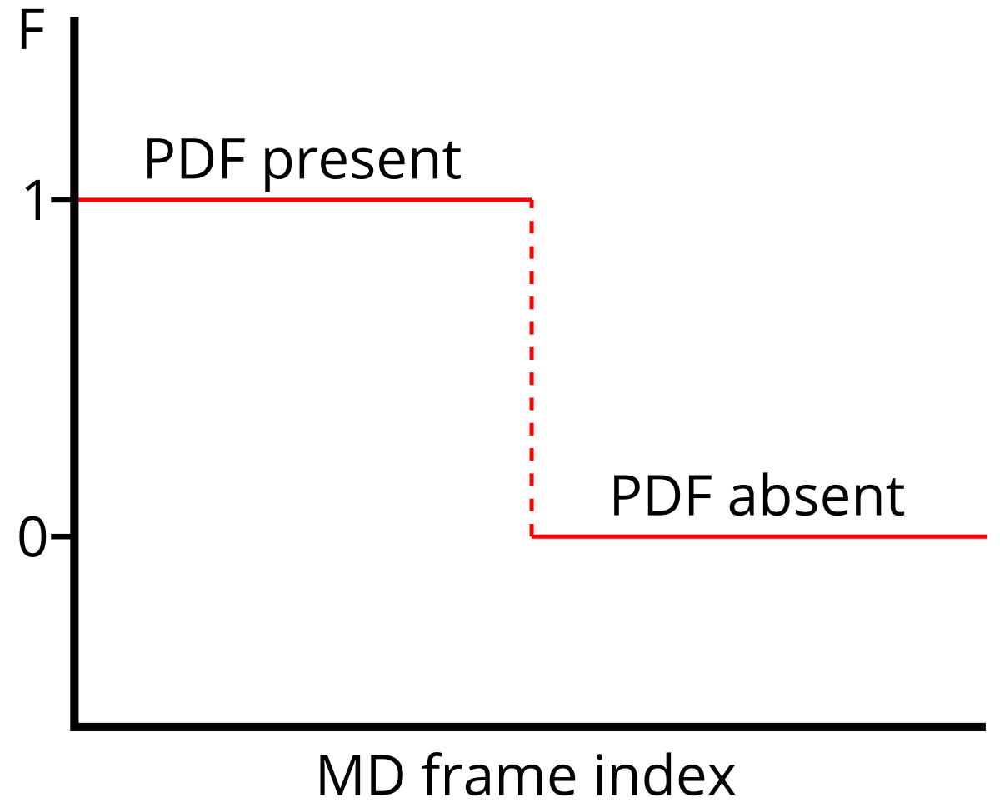

Talk from the 5th Users' Conference of IT4Innovations, Ostrava, Czech Republic
Created using Reveal.js.
Use right arrow for browsing.
Peptide deformylase as a probe of
Long-range allostery between ribosome surface and interior
Michal H. Kolář
November 10, 2021
slides: http://mhko.science/it4i2021
contact: http://mhko.science/contact


 19-06479Y
19-06479Y


19-06479Y
Felipe C. Nepomuceno
Michaela Černeková
Hugo McGrath
Tereza Svatoňová
Iva Švecová
Petr Chalupský
Jan Kejla
Petr Linhart
Jan Michna
Vít Turčin





Strategy
- Build systems with and without PDF.
- Using MD simulations generate conformational ensembles.
- Analyze structure and dynamics and search for differences caused by PDF.
- Perturb MD simulations and analyze systems' responses.
Technical details
- Amber force field, explicit SPC/E water
- 2M particles
- Gromacs 2020, CPU-only implementation
- 1000 ns/traj, 4 independent trajs/system, 3.3M corehours
Maximally correlated motion
Hub, de Groot, PLoS Comput. Biol. 2009.
Aim: Get a statistical model to predict F.
- Cartesian coordinates ⟶ principle components (PCs).
- Dimensionality reduction (~100 PCs).
- Linear combination of selected PCs to correlate with F.
F ... true function (training)
mF ... model function (prediction)
10-residue uL22 tip

Summary
- Surface of the ribosome and tunnel interior exchange information.
- A model predicts presence/absence of PDF.
- uL22 response depends on PDF.
Open questions
- The connecting path remains to be described.
- Some technical details need to be tested.